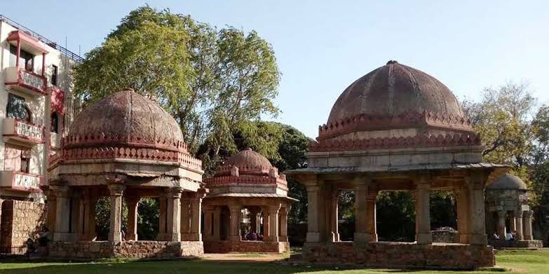
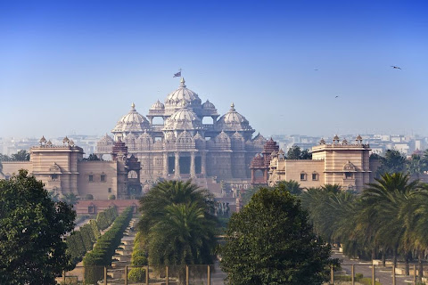

With a history that goes back many centuries, Delhi showcases an ancient culture and a rapidly modernising country. Dotted with monuments there is much to discover here. The seat of many powerful empires in the past, its long history can be traced in its many carefully-preserved monuments, ancient forts and tombs.
Some Historical Places To visit
Red Fort

Red fort or Lal qila is a historic fort in Old Delhi, Delhi in India that served as the main residence of the Mughal Emperors. Emperor Shah Jahan commissioned construction of the Red Fort on 12 May 1638, when he decided to shift his capital from Agra to Delhi. Originally red and white, its design is credited to architect Ustad Ahmad Lahori, who also constructed the Taj Mahal. The fort represents the peak in Mughal architecture under Shah Jahan and combines Persianate palace architecture with Indian traditions.
For more informationQutub Minar

The Qutb Minar, also spelled Qutub Minar and Qutab Minar, is a minaret and "victory tower" that forms part of the Qutb complex, which lies at the site of Delhi’s oldest fortified city, Lal Kot, founded by the Tomar Rajputs.[3] It is a UNESCO World Heritage Site in the Mehrauli area of South Delhi, India.[4][5] It is one of the most visited tourist spots in the city, mostly built between 1199 and 1220.
For more informationHauz Khas Fort
Hauz Khas is a neighborhood in South Delhi, its heart being the historic Hauz Khas Complex. Well known in medieval times, the Hauz Khas village has amazing buildings built around the reservoir. There are remnants of Islamic architecture roughly colored by splotches of urban culture. It is centrally located and offers both rural Hauz Khas Village and urban Hauz Khas Enclave, Market environments. Hauz Khas is surrounded by Green Park, SDA (Sri Aurobindo Marg) to the west, Gulmohar Park (Balbir Saxena Marg) towards the north, Sarvapriya Vihar (Outer Ring Road) towards the south and Asiad Village (August Kranti Marg) and Siri Fort to the east.
For more informationHumayun's Tomb

Humayun's tomb (Persian: Maqbara-i Humayun) is the tomb of the Mughal Emperor Humayun in Delhi, India.[1] The tomb was commissioned by Humayun's first wife and chief consort, Empress Bega Begum under her patronage[2][3][4][5][6] in 1558, and designed by Mirak Mirza Ghiyas and his son, Sayyid Muhammad,[7] Persian architects chosen by her.[8][9] It was the first garden-tomb on the Indian subcontinent,[10] and is located in Nizamuddin East, Delhi, India, close to the Dina-panah Citadel, also known as Purana Qila (Old Fort), that Humayun found in 1538. It was also the first structure to use red sandstone at such a scale.[11][12] The tomb was declared a UNESCO World Heritage Site in 1993,[10] and since then has undergone extensive restoration work, which is complete.[13] Besides the main tomb enclosure of Humayun, several smaller monuments dot the pathway leading up to it, from the main entrance in the West, including one that even pre-dates the main tomb itself, by twenty years; it is the tomb complex of Isa Khan Niyazi, an Afghan noble in Sher Shah Suri's court of the Suri dynasty, who fought against the Mughals, constructed in 1547 CE.
For more informationTop Sights
India Gate

The India Gate (formerly known as the All India War Memorial) is a war memorial located near the Rajpath on the eastern edge of the "ceremonial axis" of New Delhi, formerly called duty path. It stands as a memorial to 84,000 soldiers of the British Indian Army who died between 1914 and 1921 in the First World War, in France, Flanders, Mesopotamia, Persia, East Africa, Gallipoli and elsewhere in the Near and the Far East, and the Third Anglo-Afghan War. 13,300 servicemen's names, including some soldiers and officers from the United Kingdom, are inscribed on the gate.[2] Designed by Sir Edwin Lutyens, the gate evokes the architectural style of the memorial arch such as the Arch of Constantine, in Rome, and is often compared to the Arc de Triomphe in Paris, and the Gateway of India in Mumbai.
For more informationJama Masjid

The Masjid-i-Jehan-Numa (lit. 'World-reflecting Mosque'), commonly known as the Jama Masjid of Delhi, is one of the large mosques in India.[1] It was built by the Mughal Emperor Shah Jahan between 1650 and 1656, and inaugurated by its first Imam, Syed Abdul Ghafoor Shah Bukhari. Situated in the Mughal capital of Shahjahanabad (today Old Delhi), it served as the imperial mosque of the Mughal emperors until the demise of the empire in 1857. The Jama Masjid was regarded as a symbolic node of Islamic power across India, well into the colonial era. It was also a site of political significance during several key periods of British rule. It remains in active use, and is one of Delhi's most iconic sites, closely identified with the ethos of Old Delhi.
For more informationLotus Temple

The Lotus Temple, located in Delhi, India, is a Bahai House of Worship that was dedicated in December 1986. Notable for its lotuslike shape, it has become a prominent attraction in the city. Like all other Bahá’í Houses of Worship, the Lotus Temple is open to all, regardless of religion or any other qualification. The building is composed of 27 free-standing marble-clad "petals" arranged in clusters of three to form nine sides,[1] with nine doors opening onto a central hall with a height of slightly over 34 meters[1] and a capacity of 1,300 people.[2] The Lotus Temple has won numerous architectural awards[3][4] and has been featured in many newspaper and magazine articles.[5]
For more informationLodhi Garden

Lodi Gardens is a city park situated in New Delhi, India. Spread over 90 acres (360,000 m2),[1] it contains Mohammed Shah's Tomb, the Tomb of Sikandar Lodi, the Shisha Gumbad and the Bara Gumbad,[2] architectural works of the 15th century by Lodis - who ruled parts of northern India and Punjab and Khyber Pakhtunkhwa province of modern-day Pakistan, from 1451 to 1526. The site is now protected by the Archaeological Survey of India (ASI).[1] The gardens are situated between Khan Market and Safdarjung's Tomb on Lodi Road and is a popular spot for morning walks for the Delhites.
For more informationAkshardham
Swaminarayan Akshardham is a Hindu temple, and spiritual-cultural campus in Delhi, India. The temple is close to the border with Noida. Also referred to as Akshardham Temple or Akshardham Delhi, the complex displays millennia of traditional and modern Hindu culture, spirituality, and architecture. Inspired by Yogiji Maharaj and created by Pramukh Swami Maharaj, it was constructed by BAPS.[1] The temple[2] was officially opened on 6 November 2005 by Pramukh Swami Maharaj in the presence of Dr. A. P. J. Abdul Kalam, Manmohan Singh, L.K Advani and B.L Joshi.[3][4] The temple, at the centre of the complex, was built according to the Vastu shastra and Pancharatra shastra. In Swaminarayan Akshardham, similar to its predecessor Swaminarayan Akshardham in Gandhinagar, Gujarat, the main shrine is the focal point and maintains the central position of the entire complex. There are various exhibition halls which provide information about the life and work of Swaminarayan. The designers of the complex have adopted contemporary modes of communication and technology to create the various exhibition halls.[5] The complex features an abhishek mandap, Sahaj Anand water show, a thematic garden, and three exhibitions namely Sahajanand Darshan (Hall of Values), Neelkanth Darshan (an IMAX film on the early life of Swaminarayan as the teenage yogi, Neelkanth), and Sanskruti Darshan (cultural boat ride). According to Swaminarayan Hinduism, the word Akshardham means the abode of Swaminarayan and believed by followers as a temporal home of God on earth.[6][7]
For more informationWhere to stay?
Low-built Delhi sprawls, and encompasses many fascinating areas from Raj-era Connaught Place, the commercial centre, to the crammed markets of Old Delhi; and from funky enclave Hauz Khas to the elegant bungalows of central New Delhi. There are many places to stay, and many neighbourhoods to explore, but somehow most tourists end up in Pahar Ganj (near New Delhi Train Station), Karol Bagh, or Connaught Place (known locally as CP), the commercial centre of Delhi. There are a lot of cheap hotels here, and the night life can be fun and exciting, but there are also a lot of touts, conmen, hustlers, scam artists and worse. For foreigners, and especially those new to India, it can feel like a shark feeding frenzy to walk down the street.
Personally, I prefer to stay where I am treated as something more than a walking wallet. My top Delhi tip is to stay away from the hustle and bustle, and avoid the sharks. Stay instead in the leafy, upscale neighbourhoods of central New Delhi, South Delhi, or Mehrauli. In South Delhi, I rarely get ripped off, because this is not a tourist area: when I get in an auto, I get charged the same price as my neighbours, the locals. Look for accommodation in home stays, guest houses, hostels, small boutique hotels. There are lots to choose from and more coming up every day. Read about why you should choose a homestay in India here.
My top Hotel Recommendation
Over the years, I’ve visited and stayed in many hotels and guest houses in Delhi. These are my favourites, based on a combination of location, historical significance, comfort, and value for money. Some are luxury hotels and some are cheap and affordable — there’s a recommendation for every price range.
Luxury hotel $$$$$: The Imperial Hotel is a grand hotel that dates from the 1920s, was completely refurbished, and is now extremely posh. It’s also historically significant. You can read 8 reasons to love The Imperial Hotel here.
Click to read a TripAdvisor review of The Imperial Hotel … and book.Midrange hotel $$$$: Claridges is somewhat like The Imperial — a white, art-deco inspired hotel dating from the period when the British Raj was building New Delhi. It has a wonderful location among all the greenery of the Lodhi area of Delhi.
Click to read a TripAdvisor review of The Claridges Hotel … and book.Homestay $$: Thikana is a small and stylish guest house with a fabulous rooftop in a prestigious location in South Delhi, Gulmohar Park.
Click to read a TripAdvisor review of Thikana luxury homestay … and book.Wanna roam delhi in 3 to 4 days
here's how?
Day 1
Old Delhi
Red Fort
Markets of Chandni Chowk
Jama Masjid
Raj Ghat
Day 2
New Delhi (Central Delhi)
India Gate
Humayun’s Tomb
Connaught Place
Janpath market
Imperial Hotel
Khan Market
Gandhi Smirti (Gandhi Museum)
Sarojini Market
Purana Qila
Day 3
South Delhi
Dilli Haat
Hauz Khas Village
Lotus Temple
Qutb Minar
Shahpur Jat
GK 1 N-block market
(shopping for women’s clothes)
Dastkar Nature Bazaar
(better than Dilli Haat)
This website is for educational purpose only